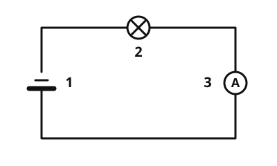

Die Stromstärke
Die Idee
Ein kleines Lämpchen und ein Föhn hängen beide am Strom, doch der Föhn braucht viel mehr davon. Wie viel Strom fließt, sagt die Stromstärke. Stell dir den Stromkreis wie einen Wasserkreislauf vor: Die Stromstärke ist wie die Wassermenge, die in jeder Sekunde an einer Stelle vorbeiströmt. Das Bild hilft, hat aber Grenzen: Strom ist kein Wasser, und Kabel sind nicht hohl.
Das merkst du dir
- Stromstärke
Die Stromstärke gibt an, wie viel elektrischer Strom in einem Stromkreis fließt. Sie hat das Formelzeichen und wird in Ampere (A) gemessen.
- Amperemeter
Ein Amperemeter misst die Stromstärke. Du baust es in den Stromkreis ein, sodass der Strom durch das Gerät fließt.
Typische Werte: ein Taschenlampenlämpchen braucht etwa 200 mA, also 0,2 A. Ein Föhn braucht etwa 9 A.

Das Amperemeter sitzt im Stromkreis, in Reihe mit der Lampe: Der ganze Strom fließt durch das Gerät. Beschriftung: 1 Batterie, 2 Lampe, 3 Amperemeter.
Quelle: https://github.com/lernapps/elektrizitaet. Lizenz: CC0-1.0.Nie parallel
Ein Amperemeter lässt den Strom fast ungehindert durch. Schließt du es parallel an, etwa direkt an die Batterie, entsteht ein Kurzschluss: Es fließt viel zu viel Strom.
Beispiel
Das Lämpchen messen
Das Amperemeter zeigt 0,25 A. Das sind 0,25 · 1000 = 250 mA. Ein Lämpchen mit 250 mA braucht also etwas mehr Strom als das Taschenlampenlämpchen von oben.
Übung
Aufgabe: Die Batterie hat 9 V. Baue das Amperemeter richtig ein und wähle den Widerstand so, dass es 0,9 A zeigt.
Tippe auf eine Stelle, um das Amperemeter dort einzubauen. Noch einmal tippen nimmt es wieder heraus. Wähle dann den Widerstand.
Noch kein Amperemeter eingebaut.
Diese Übung zeigt einen Stromkreis mit Batterie und Widerstand, in dem der Strom als laufende Punkte zu sehen ist. Du baust ein Amperemeter an eine von drei Stellen ein und wählst den Widerstand, bis es den Zielwert zeigt. Beispiel: Batterie 12 V, Ziel 0,4 A. Lösung: das Amperemeter in die obere oder untere Leitung, nie quer über die Batterie, und ein Widerstand von 30 Ω, denn 12 V : 30 Ω = 0,4 A.
Lösung
Du baust es in den Stromkreis ein, in Reihe mit der Lampe. richtige Antwort
Nur wenn der ganze Strom durch das Gerät fließt, kann es ihn messen.
Du hältst es parallel an die Lampe.
Parallel angeschlossen überbrückt das Amperemeter die Lampe: Es entsteht ein Kurzschluss.
Du hältst es nur an die Batterie.
Ein Amperemeter misst nur, was durch es hindurchfließt. An der Batterie allein fließt nichts durch das Gerät.
Das Amperemeter muss im Stromkreis liegen, damit der Strom hindurchfließt.
Mehr dazu:
Lösung
Richtige Antwort: Die Aussage stimmt.
1 A sind 1000 mA, also sind 0,5 A genau 500 mA.
Mehr dazu:
Drei Beispielaufgaben, jede mit ihrer Lösung:
Ein Gerät braucht 300 mA. Wie groß ist die Stromstärke in Ampere?
Tipp
1 A sind 1000 mA. Teile die Zahl durch 1000.
Lösung
- 300 mA sind 0,3 A.
Richtige Antwort: 0,3 A
Ein Gerät braucht 250 mA. Wie groß ist die Stromstärke in Ampere?
Tipp
1 A sind 1000 mA. Teile die Zahl durch 1000.
Lösung
- 250 mA sind 0,25 A.
Richtige Antwort: 0,25 A
Ein Gerät braucht 400 mA. Wie groß ist die Stromstärke in Ampere?
Tipp
1 A sind 1000 mA. Teile die Zahl durch 1000.
Lösung
- 400 mA sind 0,4 A.
Richtige Antwort: 0,4 A